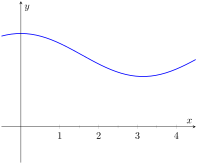

Let \(f(t)\) be a continuous function defined on \([a,b]\text{.}\) The definite integral \(\int_a^b f(x)\, dx\) is the “area under \(f\)” on \([a,b]\text{.}\) We can turn this concept into a function by letting the upper (or lower) bound vary.
Let \(F(x) = \int_a^x f(t)\, dt\text{.}\) It computes the area under \(f\) on \([a,x]\) as illustrated in Figure 1.4.1. We can study this function using our knowledge of the definite integral. For instance, \(F(a)=0\) since \(\int_a^af(t)\, dt=0\text{.}\)
The \(t\) and the \(y\) axes are uncalibrated. There are three distinct positions on the \(t\) axis, \(a\text{,}\)\(x\) and \(b\) in the order from left to right. The function \(f(t)\) is a curve facing downward, the areas under the curve between \(a\) and \(x\) are shaded. \(b\) lies to the right of \(x\) outside of the shaded portion.
Example1.4.2.Exploring the “Area so far” function.
Consider \(f(t)=2t\) pictured in Figure Figure 1.4.3 and its associated “area so far” function, \(F(x)=\int_1^x 2t\, dt\text{.}\) Using the graph of \(f\) and geometry, find an explicit formula for \(F\text{.}\)
The \(y\) axis is drawn from \(-2\) to \(8\) while the \(t\) axis is drawn without calibration but it has two distinct points \(1\) and \(x\text{.}\) The graph is a straight line passing through the origin and has a positive slope. The shaded portion is drawn under the graph between \(1\) and \(x\text{.}\)
We can see from Figure 1.4.4 that for \(x \geq 1\text{,}\) the area under the curve can be found by subtracting the area of two triangles. The larger triangle will have a base of \(x\) and a height of \(f(x)=2x\text{,}\) while the smaller triangle will have a base of \(1\) and a height of \(2\text{.}\) Therefore, the area under the curve for \(x \geq 1\) is given by \(A(x)=\frac12 (x)(2x)-\frac12 (1)(2)=x^2-1\text{.}\)
The \(y\) axis is drawn from \(-2\) to \(8\) while the \(t\) axis is drawn without calibration but it has two distinct positions \(1\) and \(x\text{.}\) The graph is a straight line passing through the origin and has a positive slope. The shaded portion is drawn under the graph between \(1\) and \(x\text{.}\)
The distance from the origin to point \(x\) on the \(t\) axis is marked \(x\text{.}\) The distance from origin to \(1\) is labeled \(1\text{.}\) The left boundary of the shaded region the \(y\) value is labeled \(2\) and on the right boundaries the \(y\) value is labeled \(2x\text{.}\)
Note that this same formula holds for \(x\lt 1\text{.}\) If \(x \lt 1\text{,}\) then \(F(x) = \int_1^x 2t\, dt=-\int_x^1 2t\, dt\text{.}\) The areas to the left of \(x=1\) will have opposite signs (since they areas are accumulated before\(x=1\)). For example, when \(x=0\text{,}\)\(F(0) = -\int_0^1 2t\, dt=-\frac12 (1)(2)=-1\text{.}\) This is the same value we get from evaluating \(x^2-1\) for \(x=0\text{.}\) Also notice that \(F(-1)=\int_1^{-1} 2t \, dt=-\int_{-1}^1 2t\, dt\text{.}\) This integral is clearly \(0\) since the areas over \([-1,0]\) and \([0,1]\) will sum to zero. Again, this is the same answer obtained by evaluating \(x^2-1\) for \(x=-1\text{.}\)
Therefore, we can reasonably say that \(F(x)=x^2-1\text{.}\) A plot of both \(f(x)=2x\) and \(F(x)=x^2-1\) are given in Figure Figure 1.4.5. You should notice a familiar relationship between these two functions. This relationship is formally stated in Theorem 1.4.6.
The \(y\) axis is drawn from \(-2\) to \(8\) and the \(x\) axis is drawn from \(-1\) to \(3\text{.}\) The graphs of two functions are shown. The first is a line through the origin with slope 2, and the second is a parabola that opens upward, with its vertex at \((0,-1)\text{.}\) Both functions intersect at approximately \(x=-0.4\) and \(x=2.4\text{,}\) it is also between these points that the line is above the curve beyond which the curve is above the line.
Subsection1.4.1Fundamental Theorem of Calculus, Parts 1 and 2
As Example 1.4.2 hinted, we can apply calculus ideas to \(F(x)\text{;}\) in particular, we can compute its derivative. In Example 1.4.2, \(F(x)=x^2-1\text{,}\) so \(F'(x)=2x=f(x)\text{.}\) While this may seem like an innocuous thing to do, it has far-reaching implications, as demonstrated by the fact that the result is given as an important theorem.
Theorem1.4.6.The Fundamental Theorem of Calculus, Part 1.
Let \(f\) be continuous on \([a,b]\) and let \(F(x) = \int_a^x f(t)\, dt\text{.}\) Then \(F\) is continuous on \([a,b]\text{,}\) differentiable on \((a,b)\text{,}\) and
Using the Fundamental Theorem of Calculus, we have \(\Fp(x) = x^2+\sin(x)\text{.}\) That is, the derivative of the “area so far” function, is simply the integrand replacing \(x\) with \(t\text{.}\)
This simple example reveals something incredible: \(F(x)\) is an antiderivative of \(x^2+\sin(x)\text{!}\) Therefore, \(F(x) = \frac13x^3-\cos(x) +C\) for some value of \(C\text{.}\) (We can find \(C\text{,}\) but generally we do not care. We know that \(F(-5)=0\text{,}\) which allows us to compute \(C\text{.}\) In this case, \(C=\cos(-5)+\frac{125}3\text{.}\))
What we have done in Example 1.4.7 was more than finding a complicated way of computing an antiderivative. Consider a function \(f\) defined on an open interval containing \(a\text{,}\)\(b\) and \(c\text{.}\) Suppose we want to compute \(\int_a^b f(t)\, dt\text{.}\) First, let
Using Equation (1.4.1), let \(x=a\) in the first integral and \(x=b\) in the second integral so that \(\int_c^a f(t)\, dt =F(a)\) and \(\int_c^b f(t)\, dt =F(b)\text{.}\) Therefore:
We now see how indefinite integrals and definite integrals are related: we can evaluate a definite integral using antiderivatives! In fact, this is exactly what we noticed in Example 1.4.2. The “area so far” function was indeed an anti-derivative of the integrand. This is the second part of the Fundamental Theorem of Calculus.
Example1.4.9.Using the Fundamental Theorem of Calculus, Part 2.
We spent a great deal of time in the previous section studying \(\int_0^4(4x-x^2)\, dx\text{.}\) Using the Fundamental Theorem of Calculus, evaluate this definite integral.
We need an antiderivative of \(f(x)=4x-x^2\text{.}\) All antiderivatives of \(f\) have the form \(F(x) = 2x^2-\frac13x^3+C\text{;}\) for simplicity, choose \(C=0\text{.}\)
Notation: A special notation is often used in the process of evaluating definite integrals using the Fundamental Theorem of Calculus. Instead of explicitly writing \(F(b)-F(a)\text{,}\) the notation \(F(x)\Big|_a^b\) is used. Thus the solution to Example 1.4.9 would be written as:
The Constant \(C\text{:}\)Any antiderivative \(F(x)\) can be chosen when using the Fundamental Theorem of Calculus to evaluate a definite integral, meaning any value of \(C\) can be picked. The constant always cancels out of the expression when evaluating \(F(b)-F(a)\text{,}\) so it does not matter what value is picked. This being the case, we might as well let \(C=0\text{.}\)
This integral is interesting; the integrand is a constant function, hence we are finding the area of a rectangle with width \((5-1)=4\) and height 2. Notice how the evaluation of the definite integral led to \(2(4)=8\text{.}\) In general, if \(c\) is a constant, then \(\int_a^b c\, dx = c(b-a)\text{.}\)
Subsection1.4.2Understanding Motion with the Fundamental Theorem of Calculus
We established, starting with [cross-reference to target(s) "idea_motion" missing or not unique], that the derivative of a position function is a velocity function, and the derivative of a velocity function is an acceleration function. Now consider definite integrals of velocity and acceleration functions. Specifically, if \(v(t)\) is a velocity function, what does \(\ds \int_a^b v(t)\, dt\) mean?
where \(V(t)\) is any antiderivative of \(v(t)\text{.}\) Since \(v(t)\) is a velocity function, \(V(t)\) must be a position function, and \(V(b) - V(a)\) measures a change in position, or displacement.
A ball is thrown straight up with velocity given by \(v(t) = -32t+20\)ft/s, where \(t\) is measured in seconds. Find, and interpret, \(\int_0^1 v(t)\, dt\) and \(\int_0^1 \abs{v(t)}\, dt\text{.}\)
Thus if a ball is thrown straight up into the air with velocity \(v(t) = -32t+20\text{,}\) the height of the ball, 1 second later, will be 4 feet above the initial height.
Note that the ball has traveled much farther. It has gone up to its peak and is falling down, but the difference between its height at \(t=0\) and \(t=1\) is 4ft.
If we wish to find the total distance traveled, we must evaluate \(\int_0^1 \abs{v(t)}\, dt\) (noting that negative velocities will reduce the diplacement, but we want distance, not displacement). In this case, we know that the velocity changes sign once when \(v(t)=0\text{,}\)so \(t=20/32=5/8\) seconds. The velocity is positive over \([0,5/8]\) and negative over \([5/8,1]\text{.}\) Therefore
As we can see in Figure 1.4.12, the positive area between \(v(t)\) and the \(t\)-axis, \(A_1=25/4\text{,}\) while the negative area, \(A_2=-9/4\text{.}\) When we add these two areas, we get the displacement of \(4\) ft. But when we add the absolute value of both of these areas (as in Figure 1.4.13), we get the total distance of \(9\) ft.
The \(y\) axis is drawn from \(-10\) to \(20\) and the \(t\) axis is drawn from \(0\) to \(1\text{.}\) The function is a straight line with a negative slope. The function has an \(y\) intercept of \(20\) and an \(t\) intercept of \(5/8\text{.}\)
The line forms two shaded regions with the \(t\) axis. Between \(0\) to \(5/8\) on the \(t\) axis the region under the graph is shaded and labeled \(A1\text{.}\) The second area is between \(5/8\) and \(1\) that lies in the fourth quadrant and the area is labeled \(A2\text{.}\)
The \(y\) axis is drawn from \(-10\) to \(20\) and the \(t\) axis is drawn from \(0\) to \(1\text{.}\) The function is a straight line with a negative slope. The function has an \(y\) intercept of \(20 \)and an \(t\) intercept of \(5/8\text{.}\)
The line forms two shaded regions with the \(t\) axis. Between \(0\) to \(5/8\) on the \(t\) axis the region under the graph is shaded and labeled \(A1\text{.}\) Between \(5/8\) and \(1\) lies the second shaded region labeled \(A3\text{.}\)
Integrating a rate of change function gives total change. Velocity is the rate of position change; integrating velocity gives the total change of position, i.e., displacement.
Integrating a speed function gives a similar, though different, result. Speed is also the rate of position change, but does not account for direction. That is, the speed an object is the absolute value of its velocity. This is what we saw in Example 1.4.11 when we evaluated \(\int_0^1 \abs{v(t)}\, dt\text{.}\) So integrating a speed function gives total change of position, without the possibility of “negative position change.” Hence the integral of a speed function gives distance traveled.
As acceleration is the rate of velocity change, integrating an acceleration function gives total change in velocity. We do not have a simple term for this analogous to displacement. If \(a(t) = 5\)miles/h\(^2\) and \(t\) is measured in hours, then
While we have just practiced evaluating definite integrals, sometimes finding antiderivatives is impossible and we need to rely on other techniques to approximate the value of a definite integral. Functions written as \(F(x) = \int_a^x f(t)\, dt\) are useful in such situations.
We can view \(F(x)\) as being the function \(G(x) = \int_2^x \ln(t) \, dt\) composed with \(g(x) = x^2\text{;}\) that is, \(F(x) = G\big(g(x)\big)\text{.}\) The Fundamental Theorem of Calculus states that \(G'(x) = \ln(x)\text{.}\) The Chain Rule gives us
Consider continuous functions \(f(x)\) and \(g(x)\) defined on \([a,b]\text{,}\) where \(f(x) \geq g(x)\) for all \(x\) in \([a,b]\text{,}\) as demonstrated in Figure 1.4.16. What is the area of the shaded region bounded by the two curves over \([a,b]\text{?}\)
The \(x\) and the \(y\) axes are uncalibrated but there are two positions \(a\) and \(b\) marked on the \(x\) axis. There are two functions \(f(x)\) and \(g(x)\) graphed. The graph shows the area that \(f(x)\) forms on \(g(x)\) between positions \(a\) and \(b\text{.}\) The two functions intersect at one point.
The function \(f(x)\) is above \(g(x)\text{,}\) it first curves up and reaches a maxima after which it dips down for a minima and then continues to increase. The function \(g(x)\) has a dip between \(a\) and \(b\) then it increases.
Graph same as previous with additional details. The \(x\) and the \(y\) axes are uncalibrated but there are two positions \(a\) and \(b\) marked on the \(x\) axis. There are two functions \(f(x)\) and \(g(x)\) graphed. The graph shows the area that \(f(x)\) forms on \(g(x)\) between positions \(a\) and \(b\text{.}\) The two functions intersect at one point.
The function \(f(x)\) is above \(g(x)\text{,}\) it first curves up and reaches a maxima after which it dips down for a minima and then continues to increase.The function \(g(x)\) has a dip between \(a\) and \(b\) then it increases. The graph shows areas under both curves as different shaded regions.
The area can be found by recognizing that this area is “the area under \(f\)\(-\) the area under \(g\text{.}\)” Using mathematical notation, the area is
Let \(f(x)\) and \(g(x)\) be continuous functions defined on \([a,b]\) where \(f(x)\geq g(x)\) for all \(x\) in \([a,b]\text{.}\) The area of the region bounded by the curves \(y=f(x)\text{,}\)\(y=g(x)\) and the lines \(x=a\) and \(x=b\) is
The \(y\) axis is drawn from \(-5\) to \(15\) and the \(x\) axis is drawn from \(-2\) to \(4\text{.}\) The first function \(x^2 +x-5\)is a curve that has a \(y\) intercept at \(-5\) and the \(x\) intercept near \(1.8\text{.}\) The second function \(3*x-2\) is a straight line. The two lines intersect at points \((-1,-5)\) and \((3,7)\text{.}\) The area bounded by the two functions is shaded.
The region whose area we seek is completely bounded by these two functions; they seem to intersect at \(x=-1\) and \(x=3\text{.}\) To check, set \(x^2+x-5=3x-2\) and solve for \(x\text{:}\)
Subsection1.4.5The Mean Value Theorem and Average Value

The \(y\) axis is uncalibrated and the \(x\) axis is drawn from \(0\) to \(4\text{.}\) The curve first decreases from \(0\) to \(3\) then it increases until \(x=4\text{.}\)
Consider the graph of a function \(f\) in Figure 1.4.20 and the area defined by \(\int_1^4 f(x)\, dx\text{.}\) Three rectangles are drawn in Figure 1.4.21; in Figure 1.4.21(a), the height of the rectangle is greater than \(f\) on \([1,4]\text{,}\) hence the area of this rectangle is is greater than \(\int_1^4 f(x)\, dx\text{.}\)
In Figure 1.4.21(b), the height of the rectangle is smaller than \(f\) on \([1,4]\text{,}\) hence the area of this rectangle is less than \(\int_1^4 f(x)\, dx\text{.}\)
Finally, in Figure 1.4.21(c) the height of the rectangle is such that the area of the rectangle is exactly that of \(\int_1^4 f(x)\, dx\text{.}\) Since rectangles that are “too big”, as in (a), and rectangles that are “too little,” as in (b), give areas greater/lesser than \(\int_1^4 f(x)\, dx\text{,}\) it makes sense that there is a rectangle, whose top intersects \(f(x)\) somewhere on \([1,4]\text{,}\) whose area is exactly that of the definite integral.
The \(y\) axis is uncalibrated and the \(x\) axis is drawn from \(0\) to \(4\text{.}\) The curve first decreases from \(0\) to \(3\) then it increases until \(x=4\text{.}\) The area under the curve between \(x=1\) to \(x=4\) is shaded. A rectangular boundary is drawn on the \(x\) axis with height above the curve.
The \(y\) axis is uncalibrated and the \(x\) axis is drawn from \(0\) to \(4\text{.}\) The curve first decreases from \(0\) to \(3\) then it increases until \(x=4\text{.}\) The area under the curve between \(x=1\) to \(x=4\) is shaded. A rectangular boundary is drawn on the \(x\) axis with height a little below the curve.
The \(y\) axis is uncalibrated and the \(x\) axis is drawn from \(0\) to \(4\text{.}\) The curve first decreases from \(0\) to \(3\) then it increases until \(x=4\text{.}\) The area under the curve between \(x=1\) to \(x=4\) is shaded. A rectangular boundary is drawn on the \(x\) axis such that from \(1\) to \(2\) the curve is above the rectangle and from \(2\) to \(4\) the curve is below the rectangle.
This is an existential statement; \(c\) exists, but we do not provide a method of finding it. Theorem 1.4.22 is directly connected to the Mean Value Theorem of Differentiation, given as [cross-reference to target(s) "thm_mvt" missing or not unique]; we leave it to the reader to see how.
The \(y\) axis has two positions marked \(sin(0.69)\) and \(1\text{,}\) the \(x\) axis has \(c\text{,}\)\(1\text{,}\)\(2\) and \(\pi\) marked in order. The function is an inverted parabola of height \(1\) and has \(x\) intercepts at \(x=0\) and \(x=\pi\text{.}\) The area under the parabola until the \(x\) axis is shaded. A rectangular boundary is drawn with height \(sin(0.69)\) and width \(\pi\)
In Figure 1.4.24\(\sin(x)\) is sketched along with a rectangle with height \(\sin(0.69)\text{.}\) The area of the rectangle is the same as the area under \(\sin(x)\) on \([0,\pi]\text{.}\)
We now turn our attention to a related topic —average value. Let \(f\) be a function on \([a,b]\) with \(c\) such that \(f(c)(b-a) = \int_a^bf(x)\, dx\text{.}\) Consider \(\int_a^b\big(f(x)-f(c)\big)\, dx\text{:}\)
When \(f(x)\) is shifted by \(-f(c)\text{,}\) the amount of area under \(f\) above the \(x\)-axis on \([a,b]\) is the same as the amount of area below the \(x\)-axis above \(f\text{;}\) see Figure 1.4.25 for an illustration of this. In this sense, we can say that \(f(c)\) is the average value of \(f\) on \([a,b]\text{.}\)
The \(x\) and the \(y\) axes are uncalibrated. The \(y\) axis is labeled as \(f(x)\text{.}\) The \(x\) axis has three distinct positions marked \(a\text{,}\)\(c\) and \(b\) in the order.
The function represents a parabola and the graph shows the area under the parabola. \(a\) and \(b\) are the two ends for the area. \(c\) is to the left of the vertex of the parabola almost at half the distance from \(a\text{.}\)
The \(x\) and the \(y\) axes are uncalibrated. The \(y\) axis is labeled as \(f(x)\text{.}\) The \(x\) axis has three distinct positions marked \(a\text{,}\)\(c\) and \(b\) in the order.
The function represents a parabola and the graph shows the area under the parabola. \(a\) and \(b\) are the two ends for the area. \(c\) is to the left of the vertex of the parabola almost at half the distance from \(a\text{.}\)
Sine the function is shifted by \(f(c)\text{,}\) there are three parts to the area, two are positive and are above the \(x\) axis, from \(a\) to \(c\) and from a little before \(b\) to \(b\text{.}\) From a little before \(b\) to \(b\) the area is drawn in the fourth quadrant from above the parabola on the \(x\) axis.
Figure1.4.25.On the left, a graph of \(y=f(x)\) and the rectangle guaranteed by the Mean Value Theorem. On the right, \(y=f(x)\) is shifted down by \(f(c)\text{;}\) the resulting “area under the curve” is 0
Examining this last line closely, the expression \(\sum_{i=1}^n f(c_i)\frac{1}{n}\) represents adding up \(n\) sample values of \(f(x)\)and then dividing by \(n\text{.}\) This is exactly what we do when we calculate the average of a set of \(n\) numbers. Now when we consider taking the limit as \(n\) goes to \(\infty\text{,}\)\(\lim\limits_{n \to \infty}\sum_{i=1}^n f(c_i)\frac{1}{n}\text{,}\) we are adding up all of the function’s output values over \([a,b]\) and dividing by the “number of numbers”. In a sense, we are adding up an infinite number of output values and then dividing by the number of terms we summed (which is again infinite).
Definition1.4.26.The Average Value of \(f\) on \([a,b]\).
Let \(f\) be continuous on \([a,b]\text{.}\) The average value of \(f\) on \([a,b]\) is \(f(c)\text{,}\) where \(c\) is a value in \([a,b]\) guaranteed by the Mean Value Theorem. i.e.,
\begin{equation*}
\text{ Average Value of \(f\) on \([a,b]\) } = \frac{1}{b-a}\int_a^b f(x)\, dx\text{.}
\end{equation*}
Example1.4.27.Finding the average value of a function.
An object moves back and forth along a straight line with a velocity given by \(v(t) = (t-1)^2\) on \([0,3]\text{,}\) where \(t\) is measured in seconds and \(v(t)\) is measured in ft/s.
We can understand the above example through a simpler situation. Suppose you drove 100 miles in 2 hours. What was your average speed? The answer is simple: displacement/time = 100 miles/2 hours = 50 mph.
What was the displacement of the object in Example 1.4.27? We calculate this by integrating its velocity function: \(\int_0^3 (t-1)^2\, dt = 3\) ft. Its final position was 3 feet from its initial position after 3 seconds: its average velocity was 1 ft/s.
This section has laid the groundwork for a lot of great mathematics to follow. The most important lesson is this: definite integrals can be evaluated using antiderivatives. Since Section 1.3 established that definite integrals are the limit of Riemann sums, we can later create Riemann sums to approximate values other than “area under the curve,” convert the sums to definite integrals, then evaluate these using the Theorem 1.4.8. This will allow us to compute the work done by a variable force, the volume of certain solids, the arc length of curves, and more.
The downside is this: generally speaking, computing antiderivatives is much more difficult than computing derivatives. [cross-reference to target(s) "chapter_anti_tech" missing or not unique] is devoted to techniques of finding antiderivatives so that a wide variety of definite integrals can be evaluated. Before that, Section 1.5 explores techniques of approximating the value of definite integrals beyond using the Left Hand, Right Hand and Midpoint Rules. These techniques are invaluable when antiderivatives cannot be computed, or when the actual function \(f\) is unknown and all we know is the value of \(f\) at certain \(x\)-values.